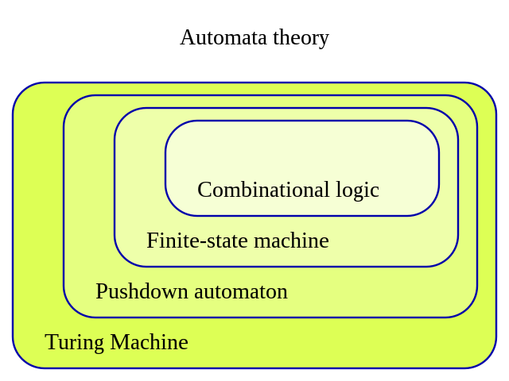
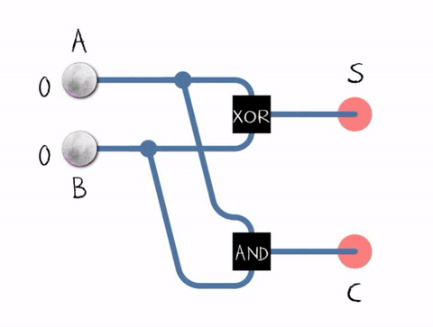
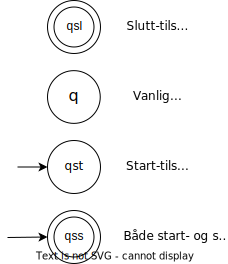
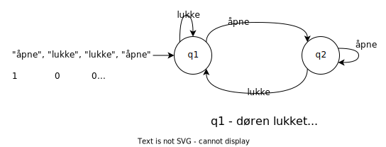
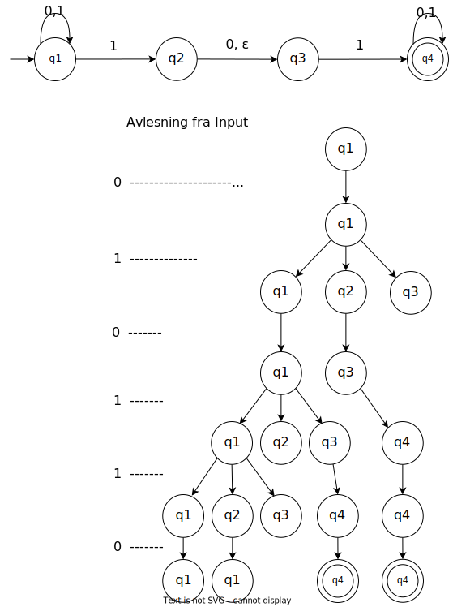

Automater
Etter å ha lest denne web-siden, skal du:
- kunne definere datamaskin og automater
- kjenne til hvordan datamaskinen er bygd opp (kun grunnprinsipper)
- ha oversikt over grunnleggende klasser av tilstandsautomater og forholdet mellom disse (DFA, NFA, REGEXP)
- kunne tegne og tolke enkle tilstandsdiagrammer
- kunne nevne eksempler fra den reelle verden, som kan modelleres som automater
1 Innledning
For å kunne bedre forstå dagens (2023) datamaskiner, kan det være nyttig å se på hvilke tankemodeller, som har ført til dagens design. Tolkning av arkeologiske funn antyder at de siste 2 millioner år har diverse arter hatt hjernestørrelse tilnærmet lik hjernestørrelsen til Homo Sapiens. Det er selvsagt umulig å bevise nøyaktig når et samfunn av individer (før Homo Sapiens) begynte bevisst å bruke abstrakte symboler og modeller for å tenke om seg selv og omverden. Kanskje de begynte å bruke språk 2 millioner år siden? Eller 150 000 år siden? Kanskje de begynte å telle (bruke symboler) for ca. 60 000 år siden?
Homo Sapiens selv er noe mer sikre på at skriftlig språk ble tatt i bruk for ca. 6000 år siden. Bøker, som et lagringsmedium for abstrakte modeller, ble tatt i bruk for ca. 1000 år siden.
For 2400 år siden levde Aristoteles, som mange teknologihistorikkere nevner som den første, som hadde visjon om å bruke logikken i tankemodellene for å konkludere om noe var sant eller usant. Aristoteles snakket også om inndeling av konsepter i kategorier, slik at man kunne resonnere med større troverdighet enn i det daglige språket. Aristoteles inspirerte de tenkere, som rundt 1700 (på slutten av 1600-tallet) år senere la grunnlaget for teoretiske regnemaskiner, som kunne regne uten direkte hjelp fra mennesker.
Vi har ikke anledning til å gå gjennom hele historien, men la oss nevne noen personer, som regnes som relevante for utvikling av modeller for regnemaskiner. Gottfried Leibniz (1646 - 1716) tok ideen om kategorier fra Aristoteles og foreslo å bruke konsepter fra naturlig språk, som symboler i et formelt matematisk logisk regnesystem. I 1673 demonstrerte Leibniz en regnemaskin ("Leibniz hjul" basert på modellen til Pascal), som kunne utføre fire aritmetiske operasjoner.
George Boole (1815 - 1864) tok denne ideen videre og definerte et eget logisk system basert på Aristoteles syllogismer. Bools systemet er kjent i dag som Boolsk algebra og er et fullverdig system for regning. Alle kretsene i dagens datamaskiner (som er basert på det binære modellen) er basert på Boolsk algebra. Gjennom slutten av 1800-tallet og begynnelsen av 1900-tallet bidro Gottlob Frege, Bertrand Russell, Georg Cantor (ingeniør eller matematiker), David Hilbert, Kurt Gödel til å utvikle et logisk matematiske grunnlag, som senere ble brukt for å implementere et fysisk enhet for generelle formål, som prosesserer informasjon og er programmerbar.
Etter Leibniz ble det gjort flere forsøk for å lage en brukbar regnemaskin. Charles Babbage utviklet en modell for en regnemaskin (1834), men klarte ikke å bygge det. I 1935 formulerte Alan Turing de grunnleggende konsepter for problemløsning ved hjelp av matematisk logikk og eksperimenterte med flere implementasjonene, hvor den mest kjente er Enigma (kodeknekking under andre verdenskrig, fortalt i filmen "Imitation Game").
En meget generell definisjon, som vi kan ta utgangspunktet i er: datamaskin et fysisk enhet for generelle formål, som prosesserer informasjon og er programmerbar.
2 Motivasjon for automatmodeller
Datamaskin er vårt utforskningsobjekt. Vi har praktisk erfaring med datamaskin, og vi skal fortsatt bruke det praktisk. For å utvide vår kunnskap om datamaskin, må vi forestille datamaskin som et abstrakt objekt, dvs. operere med abstraksjoner (modeller). Vi må både tolke andres abstraksjoner og lage våre egne. I tillegg må vi også bruke logikken for å manipulere abstraksjoner på en måte, som gir mulighet til å overføre de til praksis (utføre programmer, for eksempel). I dette avsnittet beskriver vi noen abstraksjoner andre har laget og som kan hjelpe oss til å skrive programmer for å behandle informasjon med en datamaskin.
Daniel Jackson (Jackson, 2016) skriver at programvareutviklingen dreier seg om abstraksjoner. Velger man de "riktige" abstraksjonene og programmeringen flyter "av seg selv". Velger man "feil", blir alt forkludret. Kommer man inn på feil spor, er det ingen måter å fikse det underveis. Derfor er det å finne "gode" abstraksjoner et vesentlig suksessfaktor. En abstraksjon er ikke en moduler, grensesnitt, klasse eller metode, - det er en struktur som beskriver en redusert form av en ide/tanke. En abstraksjon er alltid en oppfinnelse, men kun de "gode" abstraksjonene som går inn i historien (kunnskapsbasen til mennesker) som slike.
Er da ikke programvareutvikling en "rett frem"-prosess? I første omgang designer man abstraskjoner ved å nøye betrakte problemet og dets mulige fremtidige varianter. Så skriver man ned abstraksjoner i form av en kode i et programmeringsspråk, som grensesnitt, moduler, datastrukturer og algoritmer.
Dessverre fungerer det ikke bra i praksis. Bertrand Meyer (Wikipedia Contributors, 2023a) kaller dette problemet "ønskeful tenkning", - man starter med abstraksjoner, som virker klare og enkle, men når man bruker disse i programmer, blir de usammenhengende og til og med internt motstridende. Det kan være fordi at programmeringsmiljøet er mer krevende (mer eksakt) enn miljøet, hvor man skisserer abstraksjoner. Kompilator tillater ingen tvetydighet eller uklarthet, og feil oppstår.
En mulig strategi for er å eliminere design fasen i sin helhet og prøve å gjøre alt i kode. Design av programvare foregår i koden ved hjelp av konservativ typesjekking og enhetstester. Men kode (programmeringsspråk) er ikke et godt egnet medium for å uttrykke abstraksjoner, og selv enkle abstraksjoner kan ende i et hav av irrelevante detaljer. For å gjøre en liten endring i eksisterende kode, kan det være nødvendig å gjøre omfattende endringer mange steder.
Et alternativ strategi er å jobbe med design abstraksjoner i en notasjon, som er egnet for å uttrykke konsepter og prosesser fra den reelle verden mer presist. En slik tilnærming kalles for formell spesifikasjon. Vi kan beskrive et system for bestilling av selvkjørende biler med naturlig språk, lage illustrasjoner for veinettet og spesifikasjoner for bilene. Siden programmeringsspråk er på et helt annet abstraksjonsnivå (det er ingen reserverte ord i programmeringsspråk for overvåkingssystem for selvkjørende biler, for eksempel). En formell beskrivelse innebærer å beskrive datastrukturer som beskriver elementene fra den reele verden (biler, kunder, kart osv.), definere mulige tilstander (bil kan være ledig eller opptatt) for disse elementene og designe overgangene mellom tilstandene (bil endrer tilstand fra ledig til opptatt basert på en hendelse som systemet har fanget opp). Samtidig må vi ha kunnskap om de fysiske elementene i systemet, - hvilke kommunikasjonssystemer har bilen, hvor lang tid tar det å sende en melding til bilen, hvilke veier kan bilen kjøre på og hvilke ikke, finnes det sensorer langs veier som vi kan hente informasjon fra osv.
Men formelle spesifikasjoner er lite brukt av systemutviklere. Det kan være flere årsaker tiil det:
- notasjon for slike spesifikasjoner er ofte basert på matematisk logikk (husk at design av regnemaskiner ble i stor grad drevet med matematikere, logikkere og filosofer)
- det finnes lite verktøy (selv om ingeniører som Babbage, Von-Neumann, Shannon, Baran, Kenningan, Richie, Rob Pike, Linus Thorvalds og andre, har laget fysiske prototyper for maskiner, er det ingen etablert tradisjon for en utdanning som fremmer verktøyutvikling); de fleste verktøy begrenser seg til typesjekking (kompilatorer) og formattering av koden, mens det foreløpig finnes få verktøy for konseptuell modellering samtidig med koding (GitHub Copilot (GitHub Copilot · Your AI Pair Programmer, 2016) kan være en begynnelse, men foreløpig genererer den kun strukturer som kan defineres innenfor programmeringsspråkets konseptuelle apparatet og gir ikke mulighet til å teste mer komplekse utsagn nærmere den reelle verden)
Siden vi utforsker datamaskinen, så skal vi først se på hvordan den er laget, rent fysisk. Så skal vi se nærmere på noen modeller for formelle spesifikasjoner, som deterministisk endelig tilstandsautomat, ikke deterministisk endelig tilstandsautomat og regulære uttrykk. I neste uke skal vi se på den mest grunnleggende modell for en regnemaskin, - Turingmaskin, som er en generalisering av de mer enkle modellene som vi starter med.
3 Modeller for datamaskin
For å kunne effektivt bruke tilgjengelig maskinvare (og maskiner generelt), er detaljert kunnskapen viktig. Generelt ønsker vi å besvare spørsmålet hvilke problemer kan vi løse ved hjelp av en datamaskin/regnemaskin? For det trenger vi å studere datamaskin og etablere et begrepsapparat, som lar oss designe programmer, som kan potensielt løse spesifikke problemer for oss. Generelt ser det ut at datamaskinen kan hjelpe oss å løse problemer, som ikke trenger innsikt. Innsikt er ofte relatert til en kontekst og også til en helhetlig oppfatning av omgivelsene. Dagens datamaskiner har begrenset mulighet til det. For eksempel, de fleste datamaskinene har per i dag ingen eller meget begrenset mulighet til å bevege seg rundt i sine omgivelser. For å få maskinen til å gjøre noe for oss, modellerer vi vår oppfatning av den reelle verden ved hjelp av forskjellige mønstre (klassifisering, hierarkier, prosesser, objekter/entiteter, diagrammer, formelle spesifikasjoner), som sannsynligvis stammer fra måten menneskets hjerne virker i en sosial kontekst, og koder disse til en mengde av formelle språk (symboler). Dette tema er om nettopp slike mønstre og slike språk.
Dagens datamaskiner er sammensatte noder, og detaljene i disse maskinene kan være vanskelig å forstå uten å studere [tanke]modeller til de som har designet dem. Vi drøftet noen av modellene innledningsvis. Generelt kan vi anta, at uansett platformer eller programmeringsmiljøer, så er alle datamaskinmodellene i aktiv bruk per i dag basert på et binært grunnskjema (kvantedatamaskiner (Bravyi et al., 2022) og lagring basert på dna (Next-Generation Digital Information Storage in DNA, 2019) er under utvikling). For å bruke dette binære grunnskjema i problemløsning, må symbolene, som homo sapiens bruker for å kommunisere, oversettes til den binære representasjonen (se "Et skjema for å representere informasjon" i Figur 1). Dagens datamaskiner (anno 2023) inneholder sammensatte elektriske kretser (kretskort), som er konstruert basert på logiske brytere (transistorer), som kan enten være AV eller PÅ (LAV eller HØY brukes også i forhold til spenning på kontaktpunktene, som kobler transistorenheten til kretsen; 1 - SANT og 0 - USANT brukes i boolsk algebra, som utgjør grunnlaget for gates, for eksempel). Den mest grunnleggende logiske REPRESENTASJON av informasjon i en regnemaskin er derfor tallene 0 og 1, hvor 0 ofte brukes for å representere tilstand AV og 1 for å representere tilstand PÅ. Som nevnt i innledningen, spilte Alan Turing (AlanTuring.net Catalogue of the Archives, 2023) en viktig rolle i utviklingen av binære regnemaskiner.
Figur 1. Hierarkisk komposisjon av elementer i et datasystem / datamaskin. Inspirert av (Lecture Notes | Computation Structures | Electrical Engineering and Computer Science | MIT OpenCourseWare, 2018)
4 Endelig tilstandsautomat
En av [tanke]modellene, som stammer delvis fra nevrovitenskap og blir anvendt for å designe og forstå hvordan en regnemaskin funksjonerer, er endelig tilstandsautomat (en. Finite Automaton) eller endelig tilstandsmaskin (Bidragsytere til Wikimedia-prosjektene, 2011), som betraktes som en teoretisk modell for å modellere prosessene, som kan potensielt implementeres i den fysiske regnemaskinen. Alle datamaskiner kan også kalles for regnemaskiner, siden de på det laveste nivå kun opererer med de grunnleggende aritmetiske operasjonene og operasjoner for å flytte informasjon fra et sted til et annet (derfor har nesten alle assemblerspråk et move kommando).
I nevrofysiologi (Kolb & Whishaw, 2021) er det utviklet en model, hvor hver nervecelle (ca. 25 milliarder av disse i et menneskehjernet) representerer et grunnelement i menneskets nervesystem. Nevronene er bundet sammen med aksoner. Et slikt nett av nevroner kaller man for nevralt nettverk. Man mener at dette nettverket gjør at vi kan tenke, dvs. tolke abstrakte symboler for å kunne utføre praktiske handlinger. I 1943 skrev McCulloch og Pitts en artikkel, hvor de fremmet ideen om at nervesystemet kan betraktes som en regnemaskin. Ideen regnes som en forløper til forskning innen kunstig intelligens. Analogien mellom nervesystemet og datamaskin er fortsett omdiskutert, men det er åpenbart, at de som designer datamaskiner, har vært inspirert av kunnskapen om det menneskelige nervesystemet (nevromorfisk databehandling). Også de som prøver å finne ut prosesser bak tenkning (psykologer, nevropsykologer), bruker datamaskiner for å forske, modellere og simulere. Noen informatikere, nevropsykologer og nevrofysiologer har også samlet seg om et annet, forholdsvis nytt (1956), forksningsfelt, - kognitiv psykologi.
En definisjon for en endelig tilstandsautomat kan være at den er en abtrakt modell som beskriver en maskin, som kan befinne seg i en av et endelig antall tilstander til enhver tid og regler for endringer av disse tilstandene. Tiden blir vanligvis antatt av å være diskret, dvs. avlesing av input og endringer i tilstand skjer på spesifikke tidspunkt (i reelle datamaskiner kaller man enheten som implementerer slike tidspunkt for "klokken"). For eksempel, kan vi si at en dør er enten åpen eller lukket på et spesifikt tidspunkt og kan ikke være begge deler. En automatisk dør kan beskrives (formelt) med en abstrakt modell med 2 tilstander, som ikke tar hensyn til overgangstilstander som "halvåpen" eller "halvlukket" osv. Slike modeller er egnet som modeller for utvikling av dataprogrammer i spesifikke programmeringsspråk. Modeller gir også mulighet til å simulere en datamaskin, som er egnet til å utføre et spesifikt program, som igjen er laget for å løse et spesifikt problem.
Det finnes en omfattende matematisk teori, knyttet til slike modeller, - tilstandsautomatteori (se Figur 2). Den kan beskrives med bidrag fra forskjellige matematiske gren og har mengdeteori og kombinatorisk logikk, som grunnelementer.
Figur 2. Oversikt over automatteorien. (Wikipedia Contributors, 2022a)
Kombinatorisk logikk er en digital logikk som implementeres i Boolske kretser (se Gates i Figur 1 og husk George Boole fra innledningen). Output til en Boolsk krets avhenger kun av den gjeldende input (et annet tilfelle er hvor output er avhengig avhengig av historisk input og ikke kun av gjeldende input). Et eksempel av en krets som brukes for å summere tall er vist i Figur 3.
Figur 3. En del av en adder (en som summerer). Bilde lisensert under https://creativecommons.org/licenses/by-sa/4.0/deed.en.
Alle enhetene i en krets kombineres basert på en boolsk logikk slik at man kan designe et ønsket output basert på en gitt input. Man kan tenke på en endelig tilstandsautomat som en fantasi-maskin, som tar en input og returnerer to mulige svar, - "akseptert" (for eksempel, oppdaget et mønster) og "ikke akseptert" (feilet å finne det en skulle). En tredje svar kan også inntreffe, - "uavklart", det vil si at maskinen kommer i en tilsand som er uavklart (for eksempel, når en applikasjon "henger"). En slik maskin prosesserer et symbol fra input av gangen og utfører en handling basert på input, den tilstanden den er i og en regel som sier om den skal endre tilstand eller forbli i den samme tilstanden. En slik maskin har et meget begrenset minne, og dermed ligner på en boolsk krets, hvor alle reglene er implementert i den fysiske strukturen.
Før vi ser på flere eksempler, må vi definere symboler for notasjon, slik at vi kan uttrykke og diskutere de fantasimaskinene som vi skaper.
Figur 4. Grunnleggende symboler for illustrasjoner av endelige tilstandsautomater.
Eksempel i Figur 5 viser en tilstandsautomat, som har en start-tilstand, men den har ingen slutt-tilstand. Den simulerer en dør, som i utgangspunktet er lukket og så kan åpnes og lukkes uendelig mange ganger. Tenk selv på situasjoner, hvor den kunne ha en slutt-tilstand. Tenk også på hvorfor er det modellert med at både q1 og q2 har en tilstandsovergang fra seg selv til seg selv.
Når ser vi også prinsippet med tilstandsovergang, dvs. en pil som har en markering av en mulig inputsymbol. Alle mulig inputsymboler utgjør en alfabet. I denne korte introduksjonen av endelige automater, skal vi kun se på et binært alfabet, dvs. det vi være kun mulig med to symboler i input, 0 og 1. Siden vi har kun to kommandoer for døren i modellen i Figur 5, kan vi representere disse med 0 og 1, som vist i figuren.
Figur 5. En mulig tilstandsautomat for å simulere en dør.
Et annet eksempel, hvor en modell av en endelig tilstandsmaskin kunne vært brukt, er design av prosessen i en vaskemaskin, som stilles inn på en initiell tilstand, startes og "overlates til seg selv" for å fullføre oppgavene inntil den eventuelt når en aksepterende tilstand ("ferdig").
Som tredje eksempel, la oss se på en formell endelig tilstandsautomat. Tilstandsautomater brukes i desing av kompilatorer (også parsere og interpretatorer). Hovedoppgaven til en kompilator er å prosessere en input og gjenkjenne ikke kun enkelte symboler, men også ord og eventuelt uttrykk (som a + b, for eksempel). I det første eksemplet ser vi en tilstandsautomat som kan gjenkjenne nøyaktig to nuller (symbolet 0, se Figur 5a). Vi antar at all input består kun av nuller og enere.
Figur 5a. Et eksempel på en DFA.
En endelig tilstandsmaskin kan beskrives matematisk med en 5-tuppel (Q, Σ, δ, qs, F), hvor
Qer en endelig mengde med tilstander,Σer en endelig mengde med symboler for input (også kalles for alfabet),δer en overgangsfunksjonδ: Q × A → Q(Abetegner input her),qser den initielle (start-) tilstand ogFer en mengde med aksepterende (i forhold til at en input-streng hører til språket) tilstander.
5 NFA
Eksemplene på automatene vi har sett på til nå, er alle deterministiske, dvs. for hver tegn i alfabetet, er det kun en overgang fra en tilstand til en annen. Det vil si at den samme input vil alltid gi samme output (eller slutt-tilstand). I reelle systemet er ofte deterministiske algoritmer tidskrevende. Tenk at et automat skulle behandle input med sekvensielle sjakktrekk og endre tilstand slik at en av spillere vinner (en akseptert tilstand). Hvis vi skulle designe et automat med alle mulige tilstander for et sjakkbrett, hadde vi endt opp med 1040 tilstander. Det er gjennomsnittlig 36 mulige trekk per hver av tilstandene, og etter at hver av spillere har gjort tre trekk, er det 120 millioner mulige tilstander. Det sier seg selv at en deterministisk modell for sjakk er per i dag ikke mulig. I slike situasjoner må man finne en ikke deterministisk modell (kalles også for heuristisk og er basert på statistikk). Se Figur 6 for hvordan en deterministisk automat skiller seg fra en ikke deterministisk.
Formelt kan man sammenligne DFA og NFA slik:
- hver tilstand i en DFA har nøyaktig en overgangspil for hver symbol i alfabetet; i NFA kan det være flere piler for samme symbol i alfabetet (i NFA kan hver tilstand ha ingen, en eller flere overgangspiler for hvert symbol i alfabetet),
- i en DFA alle overgangspiler er markert med et symbol fra alfabetet; NFA har en overgangspil markert med ε, som markerer at det er mulig å endre tilstand uten at et symbol fra input er avlest.
Figur 6. Determinisme og ikke determinisme.
Vi ser på et eksempel av NFA, som illustrerer alle poengene med den (se Figur 7) Figur 7. Eksempel av NFA (demonstrert med streng 010110).
6 Regulære uttrykk
En enkel regnestykke fra aritmetikken er (7 + 3) * 4.
På samme måte kan man bruke regulære operasjoner for å bygge uttrykk som beskriver språk, som man kaller for regulære uttrykk (en. regular expressions), for eksempel:
(0 ∪ 1)0*
Verdien, når det aritmetiske uttrykket prosesseres er 40. Verdien, når det regulære uttrykket prosesseres er et språk. I dette tilfelle verdien er et språk som består av alle strenger som starter med 0 eller 1 (les tegnet ∪ som eller) etterfulgt av et vilkårlig antall 0-er.
Prøv selv. Gå til regexpal og kopier inn følgende i felte for uttrykk: (0|1)0* (∪ og | er ekvivalente)
I tekstfeltet, skriv inn 1111
Eksperimenter med andre uttrykk og tekster.
Regulære uttrykk spiller en viktig rolle i applikasjoner. Applikasjoner som behandler tekst, brukere ønsker å søke etter strenger, som tilfredstiller visse mønstre. For eksempel, anta at bedriften har et mal for alle brukernavn i et system, hvor alle brukernavn begynner med en lite bokstav i det engelske alfabetet og slutter på et tall i hakkeparentes. Da kan man skrive følgende uttrykk for å finne alle forekomst av et slikt mønster i en tekst:
^[a-z]+\[[0-9]+\]$
7 Til (filosofisk) ettertanke
Filosofen Mario Bunge skriver "Noen tilbyr meg en avokado. Den er næringsrik - er et objektivt utsagn; og Jeg liker den - et subjektivt utsagn. Det er kun en spesiell del av meg som liker den, det er min hjerne. ... Uten min hjerne ville det ikke vært noen meg. ... Mitt sinn er en delmengde av hjernens funksjoner. ... Uten et organ, ingen funksjon. ... det er materielle ting, som hjerner, og det er prosesser i dem, som tanker og følelser."
Dette inviterer til å tenke på en slags dualisme (kropp og sjel), og er en aktuell problemstilling i filosofien. Denne problemstilling har også blitt overført til tenkning om maskiner (generelt, dvs. både mekaniske og elektroniske). Kan homo sapiens potensielt skape en maskin, som kan tenke og føle (ha sjel)? Og er det et nyttig spørsmål å stille? Eventuelt, hvilke fenomener i naturen som kan simuleres i en maskin?
Bruk Figur 8 for å sammenligne mennesket med maskin (automat, datamaskin, regnemaskin). Hvor i hjernen er prosessor? Hvordan er minne organisert i mennesket og i maskinen? Er det noen likheter med I/O for maskinen og sanseorganer?
Figur 8. Sammenligning mellom "hjerne og kjerne".
8 Begrepsoppklaring
I dette emne bruker vi "maskin" og "automat" om hverandre for å beskrive de eksisterende logiske (abstrakte, tanke-) modellene, som vi igjen bruker for å resonnere oss frem til grunnleggende prinsipper brukt i design av datamaskiner og dermed også programvare. Grunnen til at disse begrepene, som vanligvis brukes for å beskrive mekaniske og elektroniske innretninger, brukes for å beskrive logiske modeller, er historisk. Tenkere før oss, som introduserte tankene om regnemaskiner og automater, kalte sine modeller, for eksempel "endelig tilstandsautomat" og "Turingmaskin". Begge disse eksemplene er eksempler på teoretiske modeller, og er ikke implementert som separate [data]maskiner.
I dette emne vil vi med en plattform mene operativsystemprogrammer plus maskinvaredesign/arkitektur.
Med et programmeringsmiljø mener vi minst en kompilator og/eller interpretator for et spesifikt programmeringsspråk.
9 Referanser (ikke obligatorisk lesestoff)
- AlanTuring.net Catalogue of the Archives. (2023). Alanturing.net. http://www.alanturing.net/turing_archive/archive/index/archiveindex.html
- AMT-C-32. (2023). Cam.ac.uk. https://turingarchive.kings.cam.ac.uk/unpublished-manuscripts-and-drafts-amtc/amt-c-32
- Lecture Notes | Computation Structures | Electrical Engineering and Computer Science | MIT OpenCourseWare. (2018). Mit.edu. https://ocw.mit.edu/courses/electrical-engineering-and-computer-science/6-004-computation-structures-spring-2009/lecture-notes/
- Bidragsytere til Wikimedia-prosjektene. (2011, December 26). Endelig tilstandsmaskin. Wikipedia.org; Wikimedia Foundation, Inc. https://no.wikipedia.org/wiki/Endelig_tilstandsmaskin
- Wikipedia Contributors. (2022a, January 22). Finite-state machine. Wikipedia; Wikimedia Foundation. https://en.wikipedia.org/wiki/Finite-state_machine
- Wikipedia Contributors. (2022b, November 11). Truth function. Wikipedia; Wikimedia Foundation. https://en.wikipedia.org/wiki/Truth_function#Table_of_binary_truth_functions (Wikipedia Contributors, 2022b)
- 2. Finite-State Machines 12.1 Introduction. (n.d.). https://www.cs.hmc.edu/~keller/cs60book/12%20Finite-State%20Machines.pdf
- McCulloch, W. S., & Pitts, W. (1943). A logical calculus of the ideas immanent in nervous activity. The Bulletin of Mathematical Biophysics, 5(4), 115–133. https://doi.org/10.1007/bf02478259
- Next-Generation Digital Information Storage in DNA. (2019). Science. https://www.science.org/doi/full/10.1126/science.1226355
- Bravyi, S., Dial, O., Gambetta, J. M., Gil, D., & Nazario, Z. (2022). The future of quantum computing with superconducting qubits. Journal of Applied Physics, 132(16), 160902. https://doi.org/10.1063/5.0082975
- Kolb, B., & Whishaw, I. Q. (2021). Fundamentals of human neuropsychology. Macmillan Learning.
- Jackson, D. (2016). Software abstractions : logic, language, and analysis. The Mit Press.
- Wikipedia Contributors. (2022c, December 22). George Boole. Wikipedia; Wikimedia Foundation. https://en.wikipedia.org/wiki/George_Boole
- Wikipedia Contributors. (2023b, January 10). Gottfried Wilhelm Leibniz. Wikipedia; Wikimedia Foundation. https://en.wikipedia.org/wiki/Gottfried_Wilhelm_Leibniz
- Wikipedia Contributors. (2023a, January 13). Bertrand Meyer. Wikipedia; Wikimedia Foundation. https://en.wikipedia.org/wiki/Bertrand_Meyer
- GitHub Copilot · Your AI pair programmer. (2016). GitHub. https://github.com/features/copilot